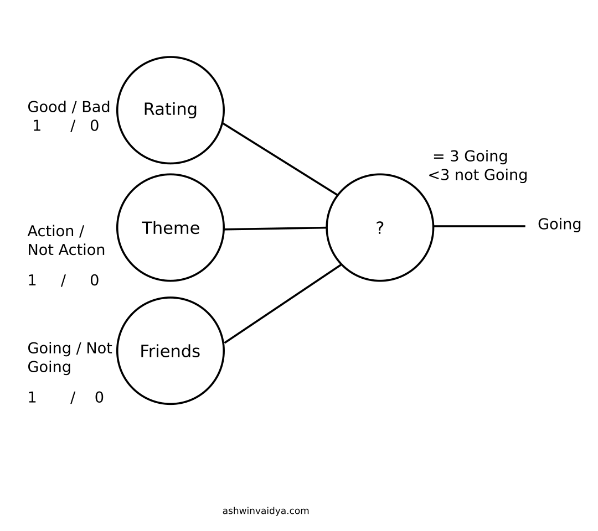
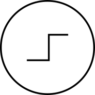
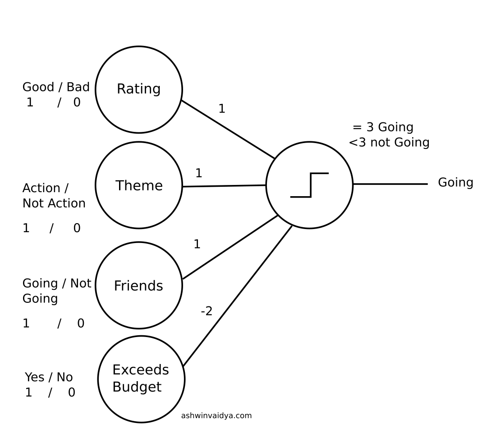
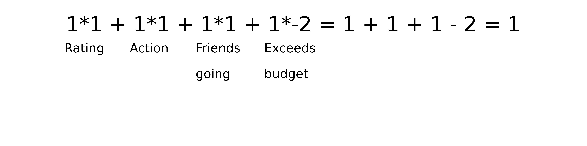
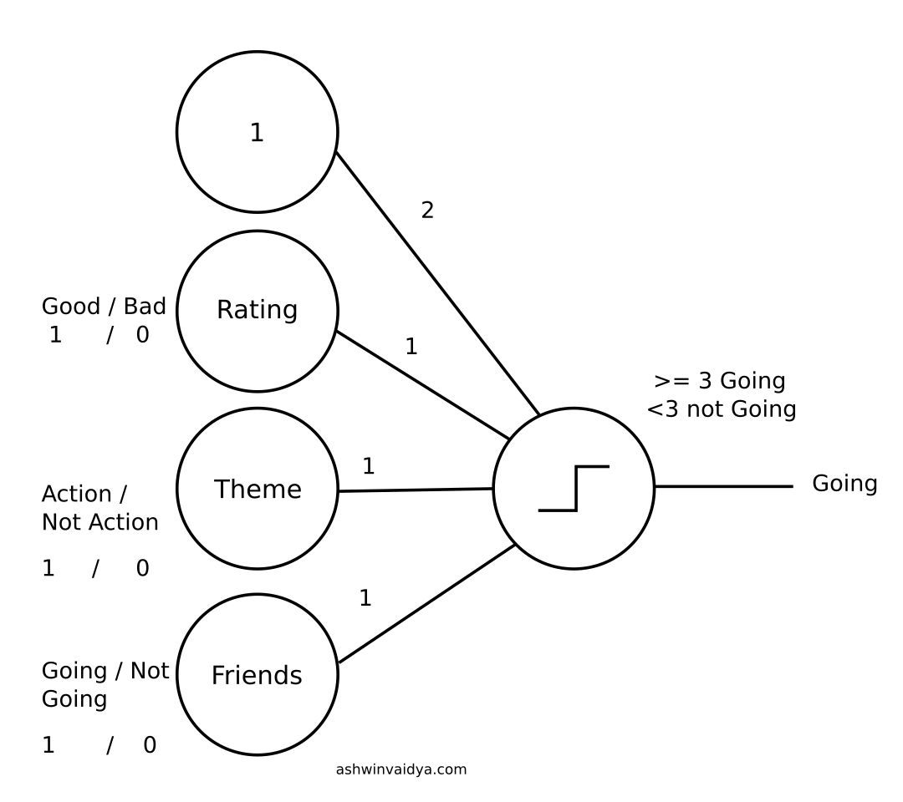
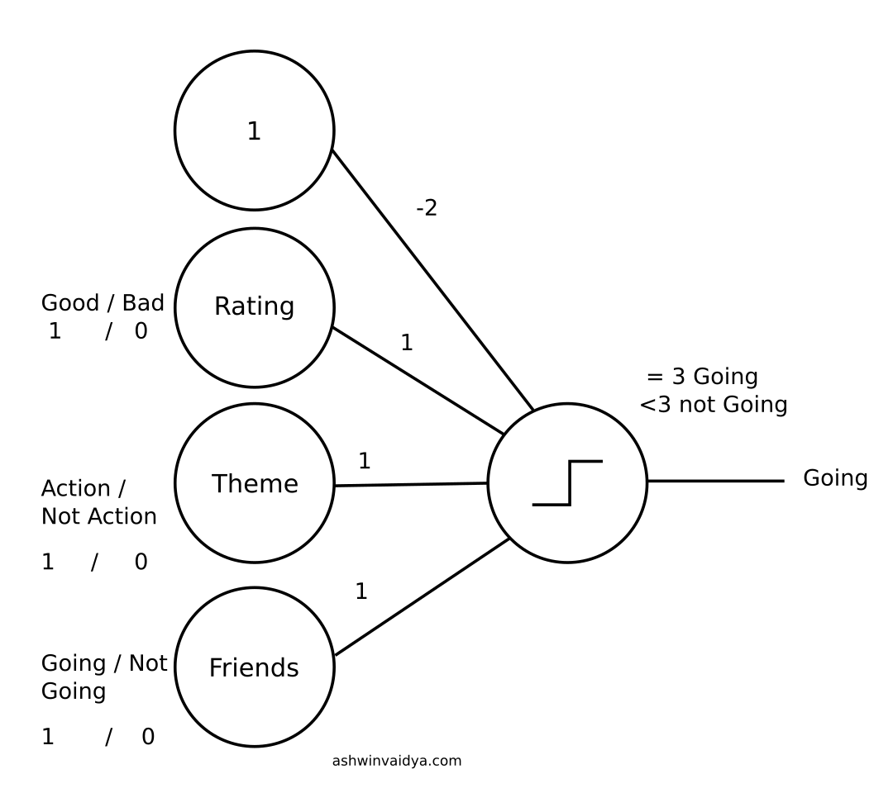
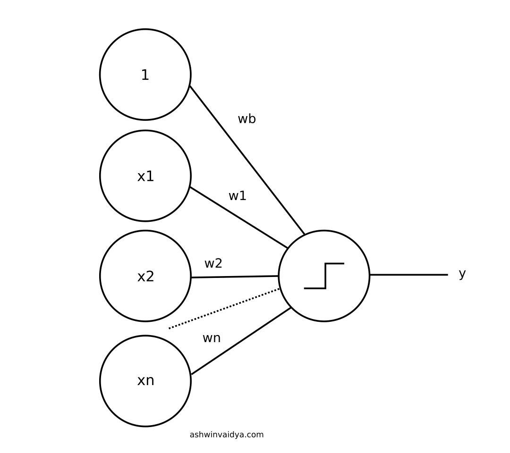

A Very Basic Introduction to Artificial Neural Network
Yesterday, I was considering going for The Most Epic Action Movie Ever. Since it was an action movie, I was up right away. A quick search online revealed it having good ratings. That's great! I called my friends, informed my plans and they jumped in. All boxes ticked, so I went.
The decision process can be visualized as below.

Here is how I made the decision:
It's an action movie (+1 point) with a good rating (+1 point) and my friends are coming (+1 point). Total = +3
Now, my decision parameter is if I get a total of 3 points then I will go, else I won't.
(1) going if points = 3
(0) not going if points < 3
It is possible that I am ok with meeting just two of the criteria. In which case:
(1) going if points >= 2
(0) not going if points < 2
This decision parameter is called an activation function. I am going to represent activation function as the following from now on.

If I am limited by budget then,

Here, I have introduced a penalty. Suppose the movie tickets do not fit my budget but all else holds true. I will calculate my points as:

Since 1 < 2 I will not be going for the movie.
These numbers on the edges between the nodes are called weights. So far I have covered weights and inputs. Let's try to write this in a generalized form.
Let $$x_1$$ denote rating input, $$x_2$$ be action input and so on.
Let $$w_1$$ denote the weight between rating and output node. $$w_2$$ between action and output and so on.
The equation then becomes: $$x_1 w_1 + x_2 w_2 + x_3 w_3 + x_4 w_4$$
This can be written as $$\sum_{i=1} ^4 x_i w_i$$
Let f(x) be the activation function. Then the whole equation can be represented as: $$f(\sum_{i=1} ^4 x_i w_i)$$
However, there is another term remaining called bias.
Bias is essentailly another input which is always on (set to 1). It is used to shift the activation threshold.

2 + 1 + 1 + 1 = 5 Going

-2 + 1 + 1 + 1 = 1 Not going
This can be interpreted as, if I am a movie buff I will go in any case. If however, I don' like movies, I won't go at all. Now, these are the examples of two extreme cases but the idea that bias shifts the threshold of activation is clearly illustrated.
The general function now becomes:
$$ f(\sum_{i=1} ^4 x_i w_i + b)$$

General Architecture of Artificial Neuron
This is the general architecture of an artificial neuron. There are many different architectures of artificial neural networks such as RNNs, Feed-forward and Convolutional NN. Even different varieties of activation functions have't been explored. And, concepts such as back-propagation, momentum and dropouts haven't been touched. In the following posts, I am going to cover all these concepts.
If you would like to create a neural network from scratch, head here.
Hey! You have reached the end 😎. Thanks for reading